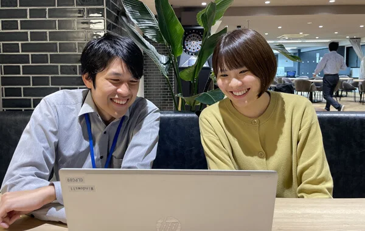
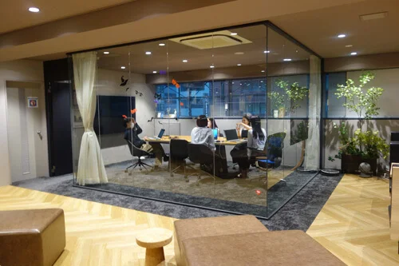
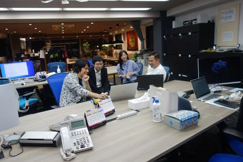

1位 同じパソコンをのぞく二人株式会社クレイス人を育て、人と人・人と未来をつなぎます。採用にも会社紹介にも。二人の視線が一台の画面に集まっています。「人を育てる」という言葉に、教え合う姿を重ねられる一枚です。横幅600pxなので、大画面で使うなら元データを探したい写真です。クレイス公式 600 × 380px 元写真を開く
2位 ガラス越しの打ち合わせ株式会社クレイス人を育て、人と人・人と未来をつなぎます。人とオフィスを一枚に。ガラスの向こうに打ち合わせをする人が見えます。床から会議室へ視線が自然に進みます。人物が小さいので、表情を伝えたい場合は近くから撮り直す余地があります。クレイス公式 500 × 333px 元写真を開く
3位 社名が見えるエントランス株式会社クレイス人を育て、人と人・人と未来をつなぎます。会社の顔を見せる。壁の社名と茶色のソファで、訪問者を迎える場所だとすぐ分かります。取材記事の表紙にも使われています。人の気配を加えるなら、同じ場所で社員が来客を迎える瞬間を撮る案です。バチャナビ取材写真 2560 × 1707px 元写真を開く
4位 デスクに集まるチーム株式会社クレイス人を育て、人と人・人と未来をつなぎます。仕事の現場を見せる。机の奥に人が集まり、相談しながら働く様子が伝わります。手前の電話や書類の比重が大きいので、撮り直すなら机の角から一歩寄りたい写真です。クレイス公式 500 × 333px 元写真を開く
5位 窓から光が入る執務エリア株式会社クレイス人を育て、人と人・人と未来をつなぎます。働く環境を見せる。窓の明るさとデスクの並びが見え、席に着いたときの雰囲気を想像できます。人物は後ろ姿が中心。働く環境を入口にする場合の候補です。バチャナビ取材写真 1024 × 683px 元写真を開く